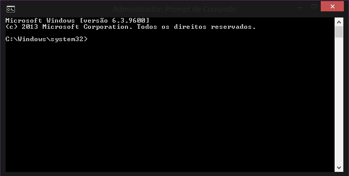

Batch Script is text files, with command lines executed in sequence one after other.
Used to automate repetitive command sequences.
Some features of Batch Scripting:
Some of the common uses of Batch Script are:
Like we said, Batch Script is writed in a text file, this file contains commands that get executed in sequence.
This files have the special extension .BAT or .CMD, are recognized and executed through an interface (sometimes called shell) provided by a system file called the command interpreter. On Windows systems, this interpreter is known as cmd.exe.
To create a script you will need a text editor, know some commands and save the file with extensions .bat or .cmd.
| Command | Description |
|---|---|
| VER | Shows the versions of MS-DOS you are using. |
| ASSOC | |
| CD | |
| CLS | |
| COPY | |
| DEL | |
| DIR | |
| DATE | |
| ECHO | |
| EXIT | |
| MD | |
| MOVE | |
| PATH | |
| PAUSE | |
| PROMPT | |
| RD | |
| REN | |
| REM | |
| START | |
| TIME | |
| TYPE | |
| VOL | |
| ATTRIB | |
| CHKDSK | |
| CHOICE | |
| CMD | |
| COMP | |
| CONVERT | |
| DRIVERQUERY | |
| EXPAND | |
| FIND | |
| FORMAT | |
| HELP | |
| IPCONFIG | |
| LABEL | |
| MORE | |
| NET | |
| PING | |
| SHUTDOWN | |
| SORT | |
| SUBST | |
| SYSTEMINFO | |
| TASKKILL | |
| TASKLIST | |
| XCOPY | |
| TREE | |
| FC | |
| DISKPART | |
| TITLE | |
| SET |